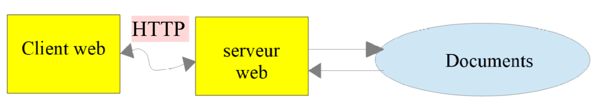
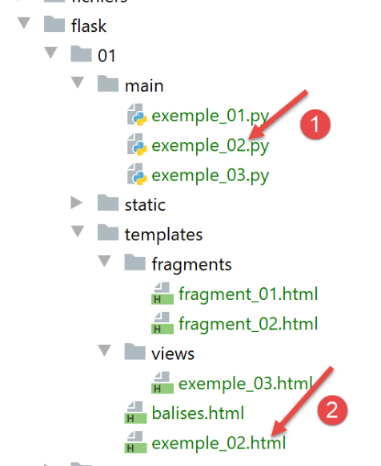
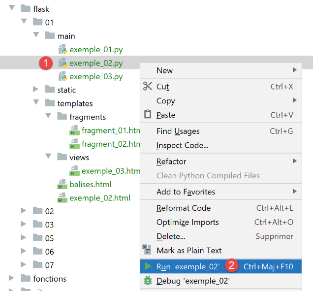
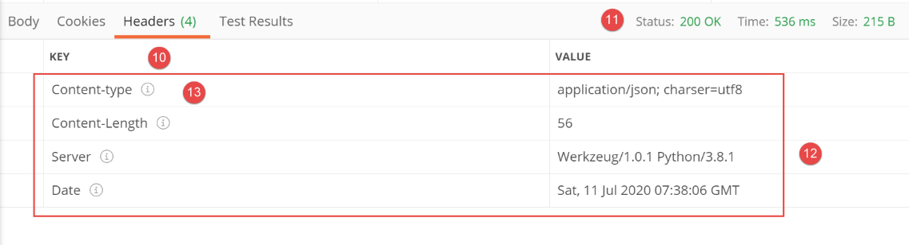
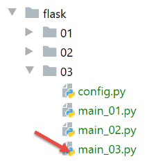
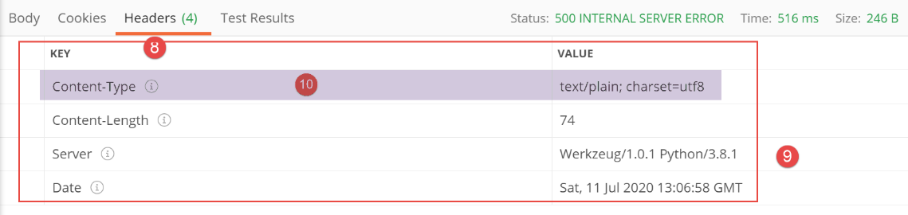
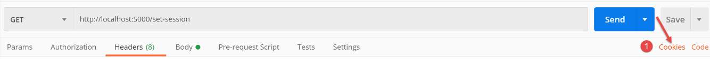
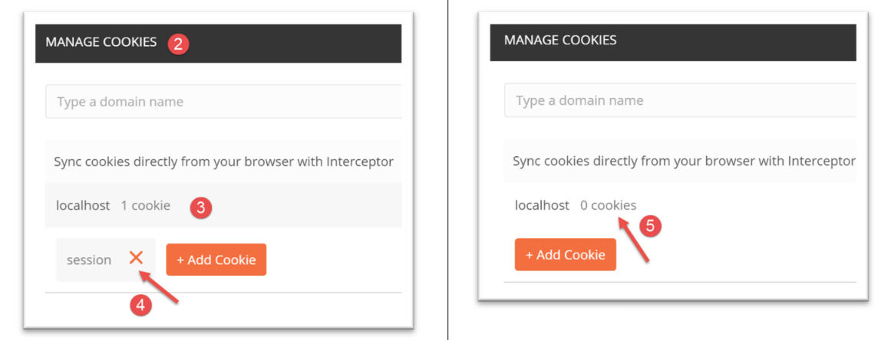
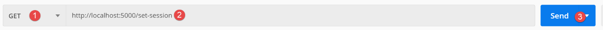
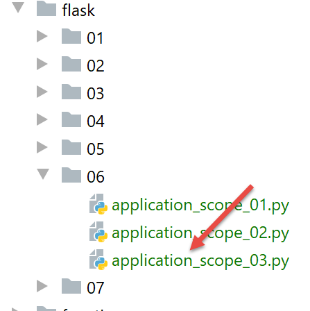

22. Servizi web con il framework Flask
Per servizio web intendiamo qui qualsiasi applicazione web che fornisce dati grezzi utilizzati da un client, spesso uno script da console negli esempi che seguono. Non ci occupiamo di una tecnologia specifica, come REST (REpresentational State Transfer) o SOAP (Simple Object Access Protocol), che forniscono dati più o meno grezzi in un formato ben definito. REST restituisce JSON, mentre SOAP restituisce XML. Ciascuna di queste tecnologie descrive con precisione come il client deve interrogare il server e il formato che la risposta del server deve assumere. In questo corso, saremo molto più flessibili riguardo alla natura della richiesta del client e alla risposta del server. Tuttavia, gli script scritti e gli strumenti utilizzati sono simili a quelli della tecnologia REST.
22.1. Introduzione
Gli script Python possono essere eseguiti da un server web. Uno script di questo tipo diventa un programma server in grado di servire più client. Dal punto di vista del client, chiamare un servizio web equivale a richiedere l'URL di quel servizio. Il client può essere scritto in qualsiasi linguaggio, incluso Python. In quest'ultimo caso, utilizziamo le funzioni Internet che abbiamo appena trattato. Dobbiamo anche sapere come "comunicare" con un servizio web, ovvero comprendere il protocollo HTTP per la comunicazione tra un server web e i suoi client. Questo era lo scopo della sezione sul protocollo HTTP. I client web descritti in questa parte del corso ci hanno permesso di esplorare parte del protocollo HTTP.

Nella loro forma più semplice, gli scambi client/server procedono come segue:
- il client apre una connessione alla porta 80 sul server web;
- effettua una richiesta per un documento;
- il server web invia il documento richiesto e chiude la connessione;
- il client chiude quindi la connessione;
Il documento può essere di vario tipo: testo in formato HTML, un'immagine, un video, ecc. Può trattarsi di un documento esistente (documento statico) o di un documento generato al volo da uno script (documento dinamico). In quest'ultimo caso, si parla di programmazione web. Lo script per la generazione dinamica dei documenti può essere scritto in vari linguaggi: PHP, Python, Perl, Java, Ruby, C#, VB.NET, ecc.
Di seguito, useremo script Python per generare dinamicamente documenti di testo.

- In [1], il client stabilisce una connessione con il server, richiede uno script Python e può inviare o meno dei parametri a tale script;
- In [3], il server web esegue lo script Python utilizzando l'interprete Python. Lo script genera un documento che viene inviato al client [2];
- Il server chiude la connessione. Il client fa lo stesso;
Il server web può gestire più client contemporaneamente.
Di seguito utilizzeremo due server web:
- il server leggero Werkzeug [https://werkzeug.palletsprojects.com/en/1.0.x/]. Questo server è utilizzato dal framework web Flask [https://flask.palletsprojects.com/en/1.1.x/]. Lo chiameremo più spesso server Flask;
- il server Apache 2 [https://httpd.apache.org/];
In tutti gli esempi verrà utilizzato il server Flask. Il server Apache verrà utilizzato per ospitare l'applicazione web che svilupperemo.
Il framework Flask è scritto in Python. Si tratta di un modulo che viene installato in un terminale PyCharm:
(venv) C:\Data\st-2020\dev\python\cours-2020\python3-flask-2020\inet\utilitaires>pip install flask
Collecting flask
Downloading Flask-1.1.2-py2.py3-none-any.whl (94 kB)
|| 94 kB 1.1 MB/s
Collecting click>=5.1
Downloading click-7.1.2-py2.py3-none-any.whl (82 kB)
|| 82 kB 5.8 MB/s
Collecting itsdangerous>=0.24
Downloading itsdangerous-1.1.0-py2.py3-none-any.whl (16 kB)
Collecting Jinja2>=2.10.1
Downloading Jinja2-2.11.2-py2.py3-none-any.whl (125 kB)
|| 125 kB 6.4 MB/s
Collecting Werkzeug>=0.15
Downloading Werkzeug-1.0.1-py2.py3-none-any.whl (298 kB)
|| 298 kB 6.4 MB/s
Collecting MarkupSafe>=0.23
Downloading MarkupSafe-1.1.1-cp38-cp38-win_amd64.whl (16 kB)
Installing collected packages: click, itsdangerous, MarkupSafe, Jinja2, Werkzeug, flask
Successfully installed Jinja2-2.11.2 MarkupSafe-1.1.1 Werkzeug-1.0.1 click-7.1.2 flask-1.1.2 itsdangerous-1.1.0
- Riga 1: il comando eseguito;
- riga 19: i componenti che sono stati installati:
- [flask-1.1.2]: è un framework di sviluppo web Python;
- [Werkzeug-1.0.1]: è il server web che risponderà alle richieste dei client;
- [Jinja2-2.11.2]: è uno strumento che permette di inserire elementi dinamici in pagine che altrimenti sarebbero statiche;
22.2. script [flask/01]: primi elementi di programmazione web

I nostri esempi verranno eseguiti nella seguente architettura:

- in [1], verrà eseguito uno script Python proprio come uno script da console standard;
- in [2], in modo trasparente, viene istanziato un server web che attende le richieste. In realtà, accetterà un solo URL;
- in [3], il browser richiederà l'unico URL del server;
- in [4], il server eseguirà lo script Python specificato dalla console [1];
- in [5], lo script restituirà i propri risultati al server web, un documento di testo;
- in [6], il server web invia questo documento di testo al browser;
22.2.1. script [example_01]: nozioni di base sull'HTML
Un browser web può visualizzare vari documenti, i più comuni dei quali sono i documenti HTML (HyperText Markup Language). Questi consistono in testo formattato con tag nella forma <tag>testo</tag>. Pertanto, il testo <b>importante</b> visualizzerà il testo "importante" in grassetto. Esistono tag autonomi, come il tag <hr/>, che visualizza una linea orizzontale. Non esamineremo tutti i tag che si possono trovare nel testo HTML. Esistono molti programmi software WYSIWYG che consentono di creare una pagina web senza scrivere una sola riga di codice HTML. Questi strumenti generano automaticamente il codice HTML per un layout creato utilizzando il mouse e controlli predefiniti. È quindi possibile inserire (utilizzando il mouse) una tabella nella pagina e poi visualizzare il codice HTML generato dal software per scoprire i tag da utilizzare per definire una tabella su una pagina web. È semplicissimo. Inoltre, la conoscenza dell'HTML è essenziale poiché le applicazioni web dinamiche devono generare autonomamente il codice HTML da inviare ai client web. Questo codice viene generato a livello di programmazione e, ovviamente, è necessario sapere cosa generare affinché il client riceva la pagina web desiderata.
Per riassumere, non è necessario conoscere l'intero linguaggio HTML per iniziare a programmare per il web. Tuttavia, questa conoscenza è necessaria e può essere acquisita attraverso l'uso di editor di pagine web WYSIWYG come DreamWeaver e decine di altri. Un altro modo per scoprire le complessità dell'HTML è navigare sul web e visualizzare il codice sorgente delle pagine che presentano elementi interessanti che non avete ancora incontrato.
Si consideri il seguente esempio, che evidenzia alcuni elementi comunemente presenti in un documento web, quali:
- una tabella;
- un'immagine;
- un link;

Un documento HTML è racchiuso tra i tag <html>…</html>. È composto da due parti:
- <head>…</head>: questa è la parte non visibile del documento. Fornisce informazioni al browser che visualizzerà il documento. Spesso contiene il tag <title>…</title>, che definisce il testo che apparirà nella barra del titolo del browser. Può contenere anche altri tag, in particolare quelli che definiscono le parole chiave del documento, che vengono poi utilizzate dai motori di ricerca. Questa sezione può contenere anche script, solitamente scritti in JavaScript o VBScript, che verranno eseguiti dal browser;
- <attributi del corpo>…</body>: questa è la sezione che verrà visualizzata dal browser. I tag HTML contenuti in questa sezione indicano al browser il layout visivo "desiderato" per il documento. Ogni browser interpreta questi tag a modo suo. Di conseguenza, due browser possono visualizzare lo stesso documento web in modo diverso. Questa è generalmente una delle sfide che devono affrontare i web designer;
Il codice HTML per il nostro documento di esempio è il seguente:
<!DOCTYPE html>
<html xmlns="http://www.w3.org/1999/xhtml">
<head>
<meta http-equiv="Content-Type" content="text/html; charset=utf-8" />
<title>Quelques balises HTML</title>
</head>
<body style="background-image: url(/static/images/standard.jpg)">
<h1 style="text-align: left">Quelques balises HTML</h1>
<hr />
<table border="1">
<thead>
<tr>
<th>Colonne 1</th>
<th>Colonne 2</th>
<th>Colonne 3</th>
</tr>
</thead>
<tbody>
<tr>
<td>cellule(1,1)</td>
<td style="text-align: center;">cellule(1,2)</td>
<td>cellule(1,3)</td>
</tr>
<tr>
<td>cellule(2,1)</td>
<td>cellule(2,2)</td>
<td>cellule(2,3</td>
</tr>
</tbody>
</table>
<br /><br />
<table border="0">
<tr>
<td>Une image</td>
<td>
<img border="0" src="/static/images/cerisier.jpg" />
</td>
</tr>
<tr>
<td>Le site de Polytech'Angers</td>
<td><a href="http://www.polytech-angers.fr/fr/index.html">ici</a></td>
</tr>
</table>
</body>
</html>
HTML | Tag HTML ed esempi |
<title>Alcuni tag HTML</title> (riga 5) Il testo [Alcuni tag HTML] apparirà nella barra del titolo del browser quando il documento verrà visualizzato | |
<hr />: visualizza una linea orizzontale (riga 10) | |
<attributi tabella>….</table>: per definire la tabella (righe 12, 32) <thead>…</thead>: per definire le intestazioni delle colonne (righe 13, 19) <tbody>…</tbody>: per definire il contenuto della tabella (righe 20, 31) <tr attributes>…</tr>: per definire una riga (righe 21, 25) <attributi td>…</td>: per definire una cella (riga 22) esempi: <table border="1">…</table>: l'attributo border definisce lo spessore del bordo della tabella <td style="text-align: center;">cell(1,2)</td> (riga 23): definisce una cella il cui contenuto sarà cell(1,2). Questo contenuto sarà centrato orizzontalmente (text-align: center). | |
<img border="0" src="/static/images/cherrytree.jpg"/> (riga 38): definisce un'immagine senza bordo (border="0") il cui file sorgente è [/static/images/cherrytree.jpg] sul server web (src="/static/images/cherrytree.jpg"). Se questo collegamento si trova in un documento web accessibile tramite l'URL [http://server/chemin/balises.html], il browser richiederà l'URL [http://server/static/images/cherry-tree.jpg] per recuperare l'immagine a cui si fa riferimento qui. | |
<a href="http://www.polytech-angers.fr/fr/index.html">qui</a> (riga 43): fa sì che il testo "qui" funga da collegamento all'URL http://www.polytech-angers.fr/fr/index.html. | |
<body style="background-image: url(/static/images/standard.jpg)"> (riga 8): indica che l'immagine da utilizzare come sfondo della pagina si trova all'URL [/static/images/standard.jpg] sul server web. Nel contesto del nostro esempio, il browser richiederà l'URL [http://server/static/images/standard.jpg] per recuperare questa immagine di sfondo. |
Da questo semplice esempio si può notare che, per generare l'intero documento, il browser deve inviare tre richieste al server:
- [http://server/chemin/balises.html] per recuperare il codice sorgente HTML del documento;
- [http://server/static/images/cerisier.jpg] per recuperare l'immagine cerisier.jpg;
- [http://server/static/images/standard.jpg] per recuperare l'immagine di sfondo standard.jpg;
Lo script [example_01] ci permetterà di visualizzare la precedente pagina statica [tags.html]:

- in [1], lo script [example_01] che verrà eseguito;
- in [3], il documento HTML che verrà visualizzato dallo script;
- in [2], le immagini del documento HTML;
Lo script [example_01] è il seguente:
- Riga 7: Istanziamo un'applicazione Flask. Un'applicazione Flask è un'applicazione web;
- il primo parametro è il nome assegnato all'applicazione. Puoi scegliere qualsiasi nome desideri. Qui abbiamo utilizzato l'attributo predefinito [__name__], che è impostato su [__main__] (riga 18);
- il secondo parametro è un parametro con nome, il che significa che la sua posizione nell'elenco dei parametri non ha importanza. Il parametro denominato [template_folder] specifica la cartella in cui si trovano le pagine statiche dell’applicazione web. Le pagine statiche vengono inviate al browser così come sono. In questo caso, le pagine statiche si trovano nella cartella [templates] all’interno dell’albero di directory del progetto. Alla riga 7, abbiamo specificato un percorso relativo alla cartella [script_dir] contenente lo script [example_01] in esecuzione;
- anche il terzo parametro è un parametro denominato. [static_folder] specifica la cartella in cui si trovano le risorse del documento HTML (immagini, video, ecc.). Anche in questo caso, abbiamo specificato un percorso relativo alla cartella [script_dir] contenente lo script [example_01] eseguito;
- righe 10–14: definiamo gli URL accettati dall'applicazione web. Ogni URL è associato a una funzione che viene eseguita quando l'URL viene richiesto da un browser web;
- riga 11: l'unico URL dell'applicazione è [/]. Si noti che in [@app.route('/')], [app] è la variabile inizializzata alla riga 7. La definizione delle rotte (i vari URL gestiti dall'applicazione) deve quindi seguire la definizione dell'applicazione [app]. Il nome dell'applicazione è arbitrario;
- righe 12–14: la funzione che viene eseguita quando l'URL [/] viene richiesto dall'applicazione web [example_01];
- riga 12: la funzione associata a un URL può avere qualsiasi nome. A volte può avere dei parametri per recuperare elementi dall'URL ad essa associato. In questo caso, non ne ha;
- riga 14:
- la funzione [render_template] restituisce una stringa che corrisponde al documento di testo generato dal suo parametro. In questo caso, il parametro è [balises.html]. Grazie alla variabile [template_folder] alla riga 7, il documento verrà cercato nella cartella [f"{script_dir}/../templates"]. Ed è proprio lì che si trova;
- la funzione [make_response] genera una risposta HTTP per il browser che ha richiesto l'URL [/]. Abbiamo visto nella sezione |il protocollo HTTP| che una risposta HTTP è composta da due parti:
- le intestazioni HTTP;
- il documento richiesto dal browser, in questo caso un documento HTML;
Alla riga 14, non abbiamo passato alcun parametro alla funzione [make_response] per generare le intestazioni HTTP. Ne genererà quindi di predefinite. Vedremo più avanti come impostare queste intestazioni HTTP.
- Infine, quando il browser richiede l'URL / dall'applicazione Flask, riceve la pagina [tags.html];
- Righe 17–20: Queste righe servono per avviare il server web che eseguirà l'applicazione web [example_01];
- Riga 18: questa condizione è vera solo quando lo script [example_01] viene eseguito in una console;
- Riga 19: L'applicazione [app] della riga 7 viene configurata:
- il parametro denominato [ENV="development"] imposta il server web in modalità di sviluppo: non appena lo sviluppatore modifica un elemento dell'applicazione, questo viene rigenerato e consegnato al server web. Lo sviluppatore non ha bisogno di richiedere una nuova esecuzione;
- il parametro denominato [DEBUG=True] consente allo sviluppatore di impostare dei punti di interruzione nel codice dell'applicazione;
- Riga 20: L'applicazione web viene avviata: viene istanziato un server web e l'applicazione web viene distribuita su di esso per rispondere alle richieste dei client web;
Ecco un esempio di esecuzione:

Nella console di esecuzione compaiono quindi i seguenti log:
C:\Data\st-2020\dev\python\cours-2020\python3-flask-2020\venv\Scripts\python.exe C:/Data/st-2020/dev/python/cours-2020/python3-flask-2020/flask/01/main/exemple_01.py
* Serving Flask app "exemple_01" (lazy loading)
* Environment: development
* Debug mode: on
* Restarting with stat
* Debugger is active!
* Debugger PIN: 334-263-283
* Running on http://127.0.0.1:5000/ (Press CTRL+C to quit)
- Riga 2: il server visualizza lo script eseguito;
- riga 3: siamo in modalità sviluppo;
- righe 4-5: il server rileva di essere stato avviato in modalità [debug]. Quindi si riavvia (riga 5). La modalità [debug] rallenta quindi leggermente l'avvio;
- Riga 8: L'URL dove è disponibile l'applicazione web distribuita [example_01];
Utilizzando un browser web, richiediamo l'URL [http://127.0.0.1:5000/]:

Otteniamo effettivamente il documento [tags.html] previsto.
22.2.2. script [example_02]: generare dinamicamente un documento HTML

Lo script [example_02] [1] genererà il seguente documento [example_02.html] [2]:
<!DOCTYPE html>
<html lang="fr">
<head>
<meta charset="UTF-8">
<title>{{page.title}}</title>
</head>
<body>
<b>{{page.contents}}</b>
</body>
</html>
Questo documento è dinamico perché il suo contenuto non è completamente noto finché il server web non lo serve. Nello specifico, le righe 5 e 8 contengono due elementi che sono sconosciuti al momento della scrittura della pagina. Essi sono noti solo quando la pagina viene inviata a un client. Vengono quindi sostituiti con i loro valori, che sono stringhe.
- Righe 5, 8: La sintassi {{expression}} fa parte del linguaggio dei modelli Jinja2 [https://jinja.palletsprojects.com/en/2.11.x/]. Prima che la pagina venga inviata a un client, gli elementi dinamici della pagina (righe 5 e 8) vengono valutati e sostituiti con i loro valori;
- riga 5: abbiamo utilizzato la sintassi [page.title]. Abbiamo quindi supposto che, quando la pagina viene generata prima di essere inviata, sia nota una variabile [page]; vedremo come. Nella sintassi {{expression}}, possiamo utilizzare qualsiasi nome di variabile desideriamo. Nelle righe 5 e 8, potremmo quindi avere {{title}} e {{contents}}. Potremmo quindi dire che [title] e [contents] sono parametri della pagina. Di seguito, useremo sempre la stessa tecnica:
- l'unico parametro della pagina sarà un dizionario [page];
- gli attributi di questo dizionario saranno utilizzati nella pagina. Qui, [page.title] alla riga 5 e [page.contents] alla riga 8;
L'applicazione web [example_02.py] è la seguente:
- Abbiamo già spiegato le righe 4–5 e 18–20 nell'esempio precedente. Continueremo a utilizzare questa struttura nei nostri esempi;
- riga 9: l'unico URL servito dall'applicazione web è l'URL /;
- riga 14: il documento servito all'URL / è il documento [example_02.html] di cui abbiamo appena parlato. Sappiamo che ha un parametro, un dizionario chiamato [page];
- riga 12: definiamo il dizionario che verrà passato come parametro alla pagina [example_02.html]. Può avere qualsiasi nome. Tuttavia, deve avere gli attributi [title, contents] utilizzati nel documento HTML;
- riga 14: la funzione [render_template] è responsabile del rendering della stringa del documento [example_02.html]. Trattandosi di un documento parametrizzato, passiamo i parametri previsti alla funzione [render_template]. Lo facciamo qui assegnando un valore al parametro denominato [page]. Nell'operazione [page=page]:
- A sinistra del segno = c'è il parametro [page] utilizzato nel documento [example_02.html];
- a destra del segno =, abbiamo il valore [page] definito alla riga 12;
- In generale, se un documento HTML ha i parametri [param1, param2, …, paramn], passiamo i loro valori alla funzione [render_template] nella forma [render_template(document, param1=value1, param2=value2, …] ;
Prima di eseguire [example_02], dobbiamo interrompere l'esecuzione di [example_01]:

Se, durante l'esecuzione dello script 1, sembra che lo script 2 sia in esecuzione, è probabile che lo script 2 sia ancora in esecuzione. Per tornare a uno stato conosciuto, è possibile arrestare tutti i processi attualmente in esecuzione in PyCharm (in alto a destra nella finestra di PyCharm):

Eseguiamo lo script [example_02]:

I log della console sono quindi i seguenti:
C:\Data\st-2020\dev\python\cours-2020\python3-flask-2020\venv\Scripts\python.exe C:/Data/st-2020/dev/python/cours-2020/python3-flask-2020/flask/01/main/exemple_02.py
* Serving Flask app "exemple_02" (lazy loading)
* Environment: development
* Debug mode: on
* Restarting with stat
* Debugger is active!
* Debugger PIN: 334-263-283
* Running on http://127.0.0.1:5000/ (Press CTRL+C to quit)
La riga 8 indica la porta di distribuzione (5000) dell'applicazione [example_02] (riga 1) sul computer [localhost]. Poiché le righe precedenti sono sempre le stesse, non le mostreremo più.
Utilizzando un browser, richiediamo l'URL [http://localhost:5000/]:

- l'espressione {{page.title}} ha prodotto [1];
- l'espressione {{page.contents}} ha prodotto [2];
22.2.3. script [example_03]: utilizzo di frammenti di pagina

- in [1], lo script [example_03.py] genererà il documento dinamico [example_03.html] [2]. Questo sarà costruito dai frammenti di pagina [fragment_01.html, fragment_02.html] [3];
Il documento [example_03.html] sarà il seguente:
<!DOCTYPE html>
<html lang="fr">
{% include "fragments/fragment_01.html" %}
<body>
{% include "fragments/fragment_02.html" %}
</body>
</html>
- Le righe 3 e 5 utilizzano la direttiva [include] di Jinja2 per includere elementi esterni nel documento;
- la sintassi è {% include … %}. Il parametro della direttiva [include] è il percorso del documento da includere. Questo percorso è relativo al parametro [template_folder] dell'applicazione Flask:
app = Flask(__name__, template_folder="../templates", static_folder="../static")
Quindi, in questo caso, i percorsi dei documenti sono relativi alla cartella [templates].
Il frammento [fragment_01.html] (i nomi sono, ovviamente, arbitrari) è il seguente:
<meta charset="UTF-8">
<title>{{page.title}}</title>
Il frammento [fragment_02.html] è il seguente:
<b>{{page.contents}}</b>
Se ricostruiamo il documento [example_03.html] utilizzando questi frammenti, otteniamo il seguente codice:
<!DOCTYPE html>
<html lang="fr">
<meta charset="UTF-8">
<title>{{page.title}}</title>
<body>
<b>{{page.contents}}</b>
</body>
</html>
Abbiamo quindi un documento identico a [example_02.html] ma costruito a partire da frammenti.
Lo script web [example_03.py] è il seguente:
Il codice è simile a quello in [example_02.py]. La riga 16 mostra come fare riferimento ai documenti che si trovano nelle sottocartelle di [template_folder] dalla riga 7.
L'esecuzione dello script [example_03.py] produce i seguenti risultati nel browser:

22.3. [flask/02] script: servizio web per data e ora

Il documento [date_time_server.html] è il seguente:
<!DOCTYPE html>
<html lang="fr">
<head>
<meta charset="UTF-8">
<title>Date et heure du moment</title>
</head>
<body>
<b>Date et heure du moment : {{page.date_heure}}</b>
</body>
</html>
- riga 8: la pagina accetta il parametro [page.date_time];
Il servizio web [date_time_server.py] è il seguente:
- riga 13: l'applicazione web serve solo l'URL /;
- righe 15–24: spiegano come recuperare la data e l'ora e come visualizzarle;
- riga 27: stringa che rappresenta la data e l'ora correnti;
- righe 28–30: generano il documento dinamico [date_time_server.html] passando il dizionario [page] della riga 29;
- riga 31: visualizza il tipo di [document] e il documento stesso. Vogliamo mostrare che si tratta di una stringa;
- riga 33: genera la risposta HTTP da inviare al client (non è ancora stata inviata);
- riga 34: visualizziamo il suo tipo e il suo valore;
- riga 35: la risposta HTTP viene inviata al client;
L'esecuzione dello script produce il seguente risultato in un browser:

I log nella console sono i seguenti:
C:\Data\st-2020\dev\python\cours-2020\python3-flask-2020\venv\Scripts\python.exe C:\Data\st-2020\dev\python\cours-2020\python3-flask-2020\flask\02\date_time_server.py
* Serving Flask app "date_time_server" (lazy loading)
* Environment: development
* Debug mode: on
* Restarting with stat
* Debugger is active!
* Debugger PIN: 334-263-283
* Running on http://127.0.0.1:5000/ (Press CTRL+C to quit)
127.0.0.1 - - [10/Jul/2020 09:32:09] "GET / HTTP/1.1" 200 -
document <class 'str'> <!DOCTYPE html>
<html lang="fr">
<head>
<meta charset="UTF-8">
<title>Date et heure du moment</title>
</head>
<body>
<b>Date et heure du moment : 10/07/20 09:42:33</b>
</body>
</html>
response <class 'flask.wrappers.Response'> <Response 195 bytes [200 OK]>
- Riga 10: Possiamo vedere che il tipo del valore restituito da [render_template] è [str]. Questa stringa non è altro che il documento [date_time_server.html] una volta che è stato analizzato (righe 10–19);
- Riga 20: Possiamo vedere che il tipo del valore restituito da [make_response] è [flask.wrappers.Response]. La funzione [Response.__str__] è stata implicitamente chiamata per visualizzare l'oggetto [Response]. La stringa restituita da questa funzione fornisce due informazioni sulla risposta HTTP che verrà inviata:
- il documento inviato è di 195 byte;
- lo stato della risposta HTTP è [200 OK]. Vedremo in seguito che abbiamo accesso a questo codice di stato;
22.4. script [flask/03]: servizi web che generano testo semplice
Abbiamo visto in un esempio precedente che il servizio web ha restituito il seguente documento:
<!DOCTYPE html>
<html lang="fr">
<head>
<meta charset="UTF-8">
<title>Date et heure du moment</title>
</head>
<body>
<b>Date et heure du moment : {{page.date_heure}}</b>
</body>
</html>
Un client web potrebbe essere interessato solo alle informazioni [page.date_time] nella riga 8 e non al markup HTML circostante. Il servizio web potrebbe restituire queste informazioni come una semplice stringa. Presenteremo qui alcuni esempi di questo tipo di servizio web.
22.4.1. script [main_01]

- [main_01] è il servizio web;
- [config] è lo script di configurazione dell'applicazione web;
- il servizio web utilizza alcune delle entità definite in [2];
Lo script [config] è il seguente:
Lo scopo principale di questa configurazione è definire il percorso Python per il servizio web. Dobbiamo essere in grado di individuare le entità [2] (riga 8).
Lo script web [main_01] è il seguente:
- righe 1-3: viene impostato il Python Path dell'applicazione;
- righe 5-10: si importano gli elementi necessari allo script;
- riga 17: il servizio web serve solo l'URL /;
- riga 20: viene creato un oggetto [Person];
- riga 22: viene creata una risposta HTTP con la stringa che rappresenta la persona. Viene chiamata la funzione [Person.__str__]. Questa restituisce la stringa JSON del dizionario [asdict] della persona (vedi |classe BaseEntity|). Il parametro della funzione [make_response] è il documento di testo inviato al client, quindi in questo caso la stringa JSON di una persona;
- riga 24: aggiungiamo un'intestazione [Content-type] alle intestazioni HTTP della risposta, che indica al client quale tipo di documento riceverà — in questo caso, un documento JSON codificato in UTF-8;
- riga 26: restituiamo una tupla a due elementi:
- la risposta al client, comprese le intestazioni HTTP e il documento;
- il codice di stato della risposta. Qui vogliamo restituire il codice di stato [200 OK]. I vari codici di stato sono definiti da costanti nel modulo [flask_api] importato alla riga 7;
Il modulo [flask_api] non è disponibile di default. È necessario installarlo. È possibile farlo in un terminale PyCharm:
(venv) C:\Data\st-2020\dev\python\cours-2020\python3-flask-2020\inet\utilitaires>pip install flask_api
Collecting flask_api
Downloading Flask_API-2.0-py3-none-any.whl (119 kB)
|| 119 kB 544 kB/s
Requirement already satisfied: Flask>=1.1 in c:\data\st-2020\dev\python\cours-2020\python3-flask-2020\venv\lib\site-packages (from flask_api) (1.1.2)
Requirement already satisfied: Jinja2>=2.10.1 in c:\data\st-2020\dev\python\cours-2020\python3-flask-2020\venv\lib\site-packages (from Flask>=1.1->flask_api) (2.11.2)
Requirement already satisfied: Werkzeug>=0.15 in c:\data\st-2020\dev\python\cours-2020\python3-flask-2020\venv\lib\site-packages (from Flask>=1.1->flask_api) (1.0.1)
Requirement already satisfied: click>=5.1 in c:\data\st-2020\dev\python\cours-2020\python3-flask-2020\venv\lib\site-packages (from Flask>=1.1->flask_api) (7.1.2)
Requirement already satisfied: itsdangerous>=0.24 in c:\data\st-2020\dev\python\cours-2020\python3-flask-2020\venv\lib\site-packages (from Flask>=1.1->flask_api) (1.1.0)
Requirement already satisfied: MarkupSafe>=0.23 in c:\data\st-2020\dev\python\cours-2020\python3-flask-2020\venv\lib\site-packages (from Jinja2>=2.10.1->Flask>=1.1->flask_api) (1.1.1
)
Installing collected packages: flask-api
Successfully installed flask-api-2.0
Quando si esegue lo script web [main_01], nel browser vengono visualizzati i seguenti risultati:

- in [2], la stringa JSON ricevuta;
- in [3-4], visualizziamo il contenuto del documento ricevuto. Si nota che non è presente alcun markup HTML, ma solo la stringa JSON;
Ora esaminiamo il ruolo dell'intestazione [Content-Type] inviata al client dal servizio web. Impostiamo il browser in modalità sviluppatore (di solito F12) e richiediamo nuovamente lo stesso URL. Di seguito è riportato uno screenshot di un browser Chrome:

- In [1], seleziona la scheda [Rete];
- In [2, 4]: l'URL richiesto dal browser;
- In [3], seleziona la scheda [Headers] (intestazioni HTTP);
- in [5], il codice di stato della risposta HTTP ricevuta;
- in [6], l'intestazione che indica al client che riceverà un testo JSON. Ciò consente al client di adattarsi alla risposta. Pertanto, il font utilizzato da Chrome per visualizzare una risposta JSON o una risposta di testo di base non è lo stesso;

- in [8], selezionare la scheda [Risposta] per accedere al documento inviato dal servizio web, in questo caso una semplice stringa JSON;
22.4.2. Postman
[Postman] è lo strumento che ci permetterà di interrogare i vari URL di un'applicazione web. Ci permette di:
- utilizzare qualsiasi URL: questi vengono costruiti manualmente;
- interrogare il server web utilizzando GET, POST, PUT, OPTIONS, ecc.;
- specificare i parametri GET o POST;
- impostare le intestazioni HTTP per la richiesta;
- ricevere una risposta in formato JSON, XML o HTML;
- accedere alle intestazioni HTTP della risposta. Questo ti dà accesso alla risposta HTTP completa del server;
[Postman] è un eccellente strumento didattico per comprendere la comunicazione client/server tramite il protocollo HTTP.
[Postman] è disponibile all'URL [https://www.getpostman.com/downloads/]. Procedi con l'installazione della tua versione di [Postman]. Durante l'installazione ti verrà chiesto di creare un account: qui non sarà necessario. L'account [Postman] serve a sincronizzare diversi dispositivi in modo che la configurazione di uno venga replicata su un altro. Niente di tutto ciò è necessario in questo caso.
Una volta installato, [Postman] mostra la seguente interfaccia:

- in [2-3], è possibile accedere alle impostazioni del prodotto;

- in [6], la versione utilizzata in questo documento;
Qui useremo [Postman] per testare il servizio web JSON precedente:
- eseguiamo lo script [flask/03/main_01];
- Quindi inviamo una richiesta all'URL [http://localhost:5000/] utilizzando Postman;

- In [1], creiamo una richiesta;
- in [2], sarà una richiesta HTTP GET;
- in [3], l'URL del servizio web da interrogare;
- in [4], inviamo la richiesta al servizio web;

- in [5], selezioniamo la scheda [Body], che mostra il documento ricevuto;
- in [6], selezioniamo la scheda [Pretty], che visualizza il documento ricevuto con la formattazione appropriata, in questo caso formattato come stringa JSON;
- in [7], il documento JSON ricevuto;
- in [8-9], il documento ricevuto senza formattazione;

- in [10], vengono visualizzate le intestazioni HTTP ricevute da Postman;
- in [11], lo stato HTTP della risposta ricevuta;
- in [12], le intestazioni HTTP ricevute;
- in [13], l'intestazione [Content-type] che ha permesso a Postman di sapere che avrebbe ricevuto una stringa JSON. Postman ha utilizzato questa informazione per formattare il documento ricevuto in un certo modo;
Esiste un altro modo per utilizzare Postman. Prevede l'uso della console di Postman (Ctrl-Alt-C). Ciò consente di visualizzare il dialogo client/server. Oltre alla scorciatoia Ctrl-Alt-C, è possibile accedere alla console di Postman tramite un'icona nell'angolo in basso a sinistra della finestra principale di Postman:

La console di Postman registra i dialoghi client/server che si verificano quando viene eseguita una richiesta Postman:

- in [3], l'elenco delle richieste effettuate da Postman dal suo avvio. Quelle più recenti si trovano in fondo all'elenco;
- in [4], la richiesta HTTP effettuata da Postman;
- in [5-6], la risposta HTTP inviata dal server web;
- in [7], è possibile visualizzare i log in modalità [raw], ovvero senza alcuna formattazione;
In modalità [raw], la finestra della console appare così:

- in [8], la richiesta HTTP effettuata da Postman al server web;
- in [9], la risposta HTTP inviata dal server web;
- in [10], è possibile tornare alla modalità [pretty logs];
Per rendere le spiegazioni più facili da seguire, numereremo le righe ottenute dalla console di Postman.
Per il client:
Per il server:
D'ora in poi, useremo principalmente:
- [Postman] come client web;
- la console di [Postman] in [modalità raw] per spiegare il dialogo client/server;
22.4.3. script [main_02]

Lo script web [main_02] è il seguente:
- Lo script [main_02] è simile allo script [main_01]. Si differenzia in due punti:
- riga 22: il documento inviato al client è una stringa raw, non una stringa JSON;
- riga 24: ciò si riflette nell'intestazione HTTP [Content-Type], che specifica il tipo [text/plain] per il documento;
Eseguiamo lo script web [main_02] e poi usiamo [Postman] per interrogarlo:

- in [1-3], inviamo la richiesta al servizio web;
- in [5], lo stato OK della risposta;
- in [4, 6], le intestazioni HTTP della risposta;
- in [7], l'intestazione [Content-Type];
- in [8-10], il documento inviato dal servizio web, una stringa di caratteri;
La console di Postman visualizza i seguenti log:
Richiesta del client:
Risposta del server:
HTTP/1.0 200 OK
Content-Type: text/plain; charset=utf8
Content-Length: 34
Server: Werkzeug/1.0.1 Python/3.8.1
Date: Mon, 13 Jul 2020 17:34:22 GMT
personne[Aglaë, de la Hûche, 87]
22.4.4. script [main_03]

Lo script web [main_03] è il seguente:
- riga 23: viene generato un errore a causa dell'istanziazione di una persona errata;
- righe 27–29: a causa dell'errore:
- riga 28: si prepara una risposta HTTP con il messaggio di errore come contenuto;
- riga 29: impostiamo il codice di stato HTTP su un valore di errore [500 Internal Server Error];
- riga 34: comunichiamo al client che stiamo inviando testo in chiaro;
- riga 36: inviamo la risposta HTTP al client;
Avviamo il servizio web [main_03] e utilizziamo Postman per interrogarlo:

- In [1-3], inviamo la richiesta;
- in [4], riceviamo una risposta con un codice di stato [500 INTERNAL SERVER ERROR];
- in [5-7]: la risposta è un testo che descrive l'errore verificatosi;

- in [8-10], le intestazioni HTTP della risposta del servizio web;
Nella console di Postman, i risultati in modalità [raw] sono i seguenti:
Richiesta del client:
Risposta del server:
HTTP/1.0 500 INTERNAL SERVER ERROR
Content-Type: text/plain; charset=utf8
Content-Length: 74
Server: Werkzeug/1.0.1 Python/3.8.1
Date: Mon, 13 Jul 2020 17:39:24 GMT
MyException[11, Le prénom doit être une chaîne de caractères non vide]
22.5. script [flask/04]: informazioni incapsulate nella richiesta

Lo script [request_parameters.py] dimostra che il servizio web ha accesso a varie informazioni incapsulate nella richiesta di un client web. Il codice è il seguente:
- Riga 9: Stiamo apportando una modifica. Specifichiamo quali verbi sono consentiti nella richiesta del client. Postman fornisce l'elenco:

I primi due [GET, POST] sono i più comunemente utilizzati e saranno anche gli unici utilizzati in questo documento. Tornando alla riga 9 del codice, il parametro [methods] contiene l'elenco dei metodi dell'elenco sopra riportato che sono consentiti dall'URL. In assenza di questo parametro, è consentito solo il metodo [GET]. Questo è ciò che è avvenuto fino ad ora;
- riga 12: costruiremo il dizionario [request_data];
- riga 13: la richiesta del client è disponibile in un oggetto predefinito [request], importato alla riga 2, di tipo [werkzeug.local.LocalProxy]. Le righe seguenti recuperano vari attributi di questo oggetto;
- anziché descrivere in dettaglio ogni attributo dell'oggetto [request], eseguiremo questo codice e osserveremo i risultati. Capiremo così meglio il significato dei vari attributi visualizzati;
- Riga 42: il dizionario [request_data] sarà il contenuto della risposta HTTP. Ricordate che deve trattarsi di testo. Flask converte automaticamente i dizionari in stringhe JSON;
- riga 44: comunichiamo al client che riceverà JSON;
- riga 46: inviamo la risposta al client;
Utilizzando il client Postman, inviamo la seguente richiesta al servizio web precedente:

- in [1-2], la richiesta inviata;
- in [2], la richiesta configurata. I parametri vengono aggiunti all'URL nel formato [?param1=value1¶m2=value2]. Ci sono due modi per inserire questi parametri in Postman:
- inserirli direttamente nell'URL;
- inserirli in [3-4];
Entrambi i metodi sono equivalenti;
Aggiungiamo ulteriori parametri alla richiesta:

- in [5-7], aggiungiamo parametri al corpo della richiesta. Mentre i parametri URL sono visibili all'utente in un browser web, quelli nel corpo della richiesta non lo sono. Il browser (o Postman in questo caso) li invia al server dopo le intestazioni HTTP. La richiesta del client web ha quindi la stessa struttura della risposta del server web: intestazioni HTTP seguite da un documento. Questo introdurrà due nuove intestazioni HTTP nella richiesta del client:
- [Content-Type]: il client comunica al server il tipo di documento che sta inviando;
- [Content-Length]: la dimensione del documento in byte;
- in [6], la codifica da utilizzare per i parametri dichiarati in [7]. Questi possono essere codificati in vari modi. [x-www-form-urlencoded] è un metodo frequentemente utilizzato dai browser;
Ecco la richiesta che verrà generata:

La risposta a questa richiesta è la seguente:

- in [1-5], abbiamo ricevuto una stringa JSON [3];
- Ciò che interessa tipicamente al servizio web sono i parametri URL [?param1=value1¶m2=value2] e quelli passati nel corpo della richiesta (documento). Questo è generalmente il modo in cui il client invia le informazioni al servizio web. Come mostrato in [5], i parametri URL sono disponibili in [request.args];
Il resto della risposta è il seguente:

- in [9], gli attributi dei parametri inclusi nel corpo della richiesta:
- [content_type] è il tipo di documento che accompagna la richiesta. Abbiamo visto che questo documento conteneva informazioni del tipo [param=value] codificate nel formato [x-www-form-urlencoded]. Postman ha quindi generato un'intestazione HTTP [Content-Type] che indica la natura del documento;
- [content_length] è la dimensione di questo documento in byte;
- In [10], l'attributo [request.environ] contiene una grande quantità di informazioni sull'ambiente in cui viene elaborata la richiesta del client. La maggior parte di queste informazioni si trova negli altri attributi dell'oggetto [request];
- in [11], i parametri presenti nel corpo della richiesta sono disponibili nell'attributo [request.form];
- in [12], il metodo utilizzato per inviare la richiesta, in questo caso il metodo [GET];
- in [13], l'attributo [request.values] è il dizionario di tutti i parametri, compresi quelli provenienti dall'URL e quelli dal corpo del documento. Per recuperare i parametri della richiesta, utilizzare l'attributo:
- [request.args] per recuperare quelli presenti nell'URL;
- [request.form] per recuperare quelli nel corpo del documento;
Nella console di Postman, i log sono i seguenti:
Richiesta del client:
- riga 9: il tipo di documento inviato al server alla riga 12;
- riga 11: le intestazioni HTTP della richiesta sono separate dal documento inviato da una riga vuota. È così che il server identifica la fine delle intestazioni HTTP del client;
- riga 12: il documento "codificato in URL". Tutti i caratteri accentati sono stati codificati;
La risposta del client è la seguente:
HTTP/1.0 200 OK
Content-Type: application/json; charset=utf-8
Content-Length: 2433
Server: Werkzeug/1.0.1 Python/3.8.1
Date: Wed, 15 Jul 2020 06:09:09 GMT
{
"accept_charsets": [],
"accept_encodings": [
[
"gzip",
1
],
[
"deflate",
1
],
[
"br",
1
]
],
"accept_languages": [],
"accept_mimetypes": [
[
"*/*",
1
]
],
"args": {
"param1": "valeur1",
"param2": "valeur2"
},
"base_url": "http://localhost:5000/",
"content_encoding": null,
"content_length": 60,
"content_type": "application/x-www-form-urlencoded",
"endpoint": "index",
"environ": "{'wsgi.version': (1, 0), 'wsgi.url_scheme': 'http', 'wsgi.input': <_io.BufferedReader name=908>, 'wsgi.errors': <_io.TextIOWrapper name='<stderr>' mode='w' encoding='utf-8'>, 'wsgi.multithread': True, 'wsgi.multiprocess': False, 'wsgi.run_once': False, 'werkzeug.server.shutdown': <function WSGIRequestHandler.make_environ.<locals>.shutdown_server at 0x00000173CA6E5160>, 'SERVER_SOFTWARE': 'Werkzeug/1.0.1', 'REQUEST_METHOD': 'GET', 'SCRIPT_NAME': '', 'PATH_INFO': '/', 'QUERY_STRING': 'param1=valeur1¶m2=valeur2', 'REQUEST_URI': '/?param1=valeur1¶m2=valeur2', 'RAW_URI': '/?param1=valeur1¶m2=valeur2', 'REMOTE_ADDR': '127.0.0.1', 'REMOTE_PORT': 50592, 'SERVER_NAME': '127.0.0.1', 'SERVER_PORT': '5000', 'SERVER_PROTOCOL': 'HTTP/1.1', 'HTTP_USER_AGENT': 'PostmanRuntime/7.26.1', 'HTTP_ACCEPT': '*/*', 'HTTP_CACHE_CONTROL': 'no-cache', 'HTTP_POSTMAN_TOKEN': 'cbfac6aa-71a0-4076-a0c3-91d36d74a4c0', 'HTTP_HOST': 'localhost:5000', 'HTTP_ACCEPT_ENCODING': 'gzip, deflate, br', 'HTTP_CONNECTION': 'keep-alive', 'CONTENT_TYPE': 'application/x-www-form-urlencoded', 'CONTENT_LENGTH': '60', 'werkzeug.request': <Request 'http://localhost:5000/?param1=valeur1¶m2=valeur2' [GET]>}",
"files": {},
"form": {
"nom": "s\u00e9l\u00e9n\u00e9",
"pr\u00e9nom": "agla\u00eb",
"\u00e2ge": "77"
},
"full_path": "/?param1=valeur1¶m2=valeur2",
"host": "localhost:5000",
"method": "GET",
"path": "/",
"query_string": "param1=valeur1¶m2=valeur2",
"referrer": null,
"remote_addr": "127.0.0.1",
"remote_user": null,
"scheme": "http",
"script_root": "",
"url": "http://localhost:5000/?param1=valeur1¶m2=valeur2",
"url_root": "http://localhost:5000/",
"user_agent": "PostmanRuntime/7.26.1",
"values": {
"nom": "s\u00e9l\u00e9n\u00e9",
"param1": "valeur1",
"param2": "valeur2",
"pr\u00e9nom": "agla\u00eb",
"\u00e2ge": "77"
}
}
- righe 1-5: le intestazioni HTTP della risposta terminano con una riga vuota;
- righe 41-45: i caratteri accentati sono stati codificati in UTF-8;
Se ora utilizziamo il metodo [POST] per inviare la stessa richiesta con gli stessi parametri, otterremo la stessa risposta, tranne che in [12] avremo [‘method’: ‘POST’].
Qual è quindi la differenza tra i metodi GET e POST? La differenza è sottile e deriva dal modo in cui i browser li hanno storicamente utilizzati:
- I parametri nell'URL sono comodi perché un URL configurato in questo modo può fungere da link all'interno di un documento HTML. L'utente può anche modificare i parametri autonomamente per ottenere risposte diverse dal server. In questo caso, i browser utilizzano comunemente il metodo [GET] e non c'è alcun corpo (content_length=0) nella richiesta inviata al server web (nessun parametro nascosto);
- A volte non vogliamo che i parametri vengano visualizzati nell'URL. Questo è il caso delle password inviate al server. Inoltre, lo spazio occupato dai parametri dell'URL è limitato (un URL non può superare una certa lunghezza). I parametri del corpo della richiesta non hanno questa limitazione. Inoltre, troppi parametri nell'URL lo rendono illeggibile. Consideriamo il caso comune di un modulo di registrazione su un sito web. In passato, quando le pagine HTML non includevano ancora JavaScript, i browser inviavano le informazioni inserite tramite una richiesta POST. Questo veniva definito "valori inviati";
Quindi, agli albori della programmazione web:
- i metodi GET erano generalmente associati alla richiesta di informazioni da un server web;
- i metodi POST erano generalmente associati all'invio di informazioni dal browser al server. Il server veniva quindi "arricchito" da questi dati;
Da allora è arrivato JavaScript. Mentre negli esempi precedenti lo sviluppatore non aveva alcun controllo (cliccare su un link innescava inevitabilmente un GET, inviare un modulo comportava inevitabilmente un POST), JavaScript gli ha restituito quel controllo. In questo modello, la pagina HTML è collegata al codice JavaScript che può bypassare il browser. Pertanto, un clic su un link può essere intercettato dal codice JavaScript, che può quindi eseguire codice che invia una richiesta al server. Questa richiesta sarà trasparente per l'utente. Non la vedrà. Questo codice agisce come un client web e, proprio come abbiamo fatto con Postman, lo sviluppatore può creare qualsiasi richiesta desideri. Per riprendere l'esempio del clic su un link, può eseguire una richiesta POST quando, per impostazione predefinita, il browser avrebbe eseguito una richiesta GET. Questi sviluppi hanno reso meno rilevanti le differenze tra GET e POST.
Tuttavia, gli sviluppatori seguono spesso queste regole:
- Una richiesta GET non deve modificare lo stato del server. Richieste GET successive effettuate con gli stessi parametri nell'URL devono restituire lo stesso documento. Inoltre, una richiesta GET in genere non ha un corpo (nessun documento associato), ma solo parametri nell'URL;
- Una richiesta POST può modificare lo stato del server. I parametri vengono inviati più spesso nel corpo della richiesta. Questi sono indicati come valori inviati. L'esempio del modulo è il più eloquente: i valori inseriti dall'utente vengono inseriti nel corpo POST e il server li memorizza da qualche parte, spesso in un database;
Nel resto di questo documento non seguiremo alcuna regola specifica.
22.6. script [flask-05]: gestione della memoria utente
22.6.1. Introduzione
Negli esempi client/server precedenti, il processo funzionava come segue:
- il client apre una connessione alla porta 80 sul server web;
- invia la sequenza di testo: intestazioni HTTP, riga vuota, [documento];
- in risposta, il server invia una sequenza dello stesso tipo;
- il server chiude la connessione con il client;
- il client chiude la connessione al server;
Se lo stesso client effettua una nuova richiesta al server web poco dopo, viene stabilita una nuova connessione tra il client e il server. Il server non è in grado di stabilire se il client che si connette abbia già visitato il sito in precedenza o se questa sia la prima richiesta. Tra una connessione e l'altra, il server "dimentica" il proprio client. Per questo motivo, il protocollo HTTP è considerato un protocollo stateless. Tuttavia, è utile che il server ricordi i propri client. Ad esempio, se un'applicazione è sicura, il client invierà al server un nome utente e una password per autenticarsi. Se il server "dimenticasse" il proprio client tra una connessione e l'altra, il client dovrebbe autenticarsi ad ogni nuova connessione, il che non è fattibile.
Per tracciare un client, il server può procedere in vari modi:
- quando un client effettua una richiesta iniziale, il server include nella sua risposta un identificatore che il client deve poi rispedire ad ogni nuova richiesta. Utilizzando questo identificatore, che è unico per ogni client, il server può riconoscere il client. Può quindi gestire una cache per quel client sotto forma di una cache associata in modo univoco all’identificatore del client. È così che funzionano i servizi PHP, ad esempio;
- Quando un client effettua una richiesta iniziale, il server include nella sua risposta non un identificatore, ma la memoria stessa dell'utente. Non memorizza nulla sul lato server. Per mantenere la sua memoria, il client web deve inviare nuovamente questa memoria con ogni nuova richiesta. Questa memoria viene modificata (o meno) con ogni nuova richiesta e rinviata (o meno) al client. Questo è il metodo utilizzato dal framework Flask;
Le differenze tra i due metodi sono le seguenti:
- Il Metodo 1 utilizza meno larghezza di banda. Tra il client e il server viene scambiato solo un identificatore. Man mano che la memoria dell'utente cresce, ciò non ha alcun effetto sull'identificatore, che rimane lo stesso. Questo non è il caso del Metodo 2, dove la memoria dell'utente viene scambiata ad ogni richiesta e può crescere nel corso di più richieste;
- Il metodo 1 consuma più spazio di memoria. Questo perché il server memorizza la memoria dell'utente sui propri file system. Se ci sono un milione di utenti, ciò potrebbe potenzialmente rappresentare un problema. Il metodo 2 non memorizza nulla sul server;
Tecnicamente, ecco come funziona in entrambi i metodi:
- Nella risposta a un nuovo client, il server include l'intestazione HTTP [Set-Cookie: Key=ID] o [Set-Cookie: memory]. Con il Metodo 1, lo fa solo alla prima richiesta. Con il Metodo 2, lo fa ogni volta che la memoria dell'utente cambia;
- Nelle sue richieste, il client restituisce sistematicamente ciò che ha ricevuto: un identificatore o una memoria. Lo fa tramite l'intestazione HTTP [Cookie: Key=Value];
Ci si potrebbe chiedere come il server sappia di avere a che fare con un nuovo cliente piuttosto che con uno che ritorna. È la presenza dell'intestazione HTTP Cookie nelle intestazioni HTTP del client a dirglielo. Per un nuovo cliente, questa intestazione è assente.
L'insieme delle connessioni da un determinato client è chiamato sessione.
Il server può gestire altri tipi di memoria:

- in [1], la memoria a livello di richiesta è specifica. Viene utilizzata quando la richiesta del client web non viene elaborata da un singolo servizio (o applicazione), ma da più servizi. Per passare informazioni al servizio i+1, il servizio i può arricchire la richiesta elaborata con queste informazioni. Questa è chiamata memoria a livello di richiesta. Non useremo questo tipo di memoria in questo documento;
- in [2, 4], la memoria utente che abbiamo appena descritto. Può essere implementata localmente [2] o gestita tramite il client [4];
- in [3], la memoria "a livello di applicazione" è generalmente di sola lettura. È condivisa da tutti gli utenti. Spesso contiene elementi della configurazione dell'applicazione web, che è condivisa da tutti gli utenti dell'applicazione. Dobbiamo prestare attenzione a questo tipo di memoria: la scrittura su di essa deve avvenire in un momento in cui gli utenti non hanno ancora inviato richieste, il più delle volte all'avvio dell'applicazione. Una volta che le richieste iniziano ad arrivare, diventa difficile scrivere su questa memoria. Quando il server web serve più utenti contemporaneamente e due di essi tentano di scrivere nella memoria a livello di "applicazione", c'è il rischio che questa memoria venga danneggiata. Questo perché, mentre l'Utente 1 ha iniziato a scrivere nella memoria a livello di "applicazione", potrebbe essere interrotto prima di finire. Ciò si traduce in una memoria dell'applicazione incompleta. Poiché è condivisa, l'Utente 2 potrebbe leggerla e ottenere uno stato errato;
22.6.2. script [session_scope_01]

Gli script [session_scope_xx] illustrano la gestione della memoria utente.
Lo script [session_scope_01] è il seguente:
- riga 11: viene istanziata un'applicazione Flask;
- riga 14: all'attributo [secret_key] di questa applicazione viene assegnato un valore tratto dal file di configurazione utilizzato nelle righe 1-3. Una sessione Flask è possibile solo se questo attributo è inizializzato. È possibile inserirvi qualsiasi cosa. Viene utilizzato per crittografare una parte dei "dati utente" che saranno inviati al client. In genere inseriamo qualcosa di difficile da indovinare. Nel file [config], la chiave segreta è definita come segue:
# on rend la config
config = {
# configuration Flask
"SECRET_KEY": "vibnFfrdWYUp?*LQ"
}
- Per la prima volta, stiamo definendo un'applicazione web che gestisce qualcosa di diverso dall'URL /
- riga 17: l'URL [/set-session] viene utilizzato per inizializzare la sessione dell'utente;
- riga 27: l'URL [/get-session] viene utilizzato per recuperare la sessione dell'utente;
- riga 20: inseriamo qualcosa nella sessione dell’utente, in questo caso un nome. La sessione è gestita in modo simile a un dizionario. Non è possibile inserire qualsiasi cosa nella sessione. I valori inseriti devono poter essere convertiti in JSON ( ). Per i tipi predefiniti di Python, ciò avviene automaticamente senza l’intervento dello sviluppator . Per gli oggetti personalizzati che Python non riconosce, è necessario eseguire la conversione in JSON manualmente;
- riga 22: creiamo una risposta HTTP senza contenuto (nessun parametro passato a `make_response`);
- riga 23: comunichiamo al client che riceverà un documento vuoto (di 0 byte);
- riga 24: inviamo la risposta HTTP al client. L'URL [/set-session] quindi non fa altro che inizializzare una sessione utente;
- riga 27: l'URL [/get-session] permette all'utente di vedere cosa c'è nella sua sessione;
- riga 30: creiamo una risposta HTTP contenente la stringa JSON della sessione dell'utente. Qui, abbiamo creato noi stessi la stringa JSON invece di lasciare che fosse Flask a generarla. Questo perché non vogliamo che i caratteri accentati vengano sostituiti (ensure_ascii=False);
- Riga 31: comunichiamo al client che stiamo inviando JSON;
- riga 32: inviamo la risposta HTTP al client;
Lo scopo di questo script è dimostrare che la sessione utente ci permette di collegare le richieste successive dell'utente:
- La richiesta 1 invierà una richiesta all'URL [/set-session];
- La richiesta 2 richiederà l'URL [/get-session] e recupererà il nome inizializzato dalla richiesta 1;
Lo script [config] che configura gli script nella cartella [flask/05] è il seguente:
Eseguiamo lo script [session_scope_01], quindi utilizziamo Postman per inviare una richiesta all'URL [/set-session]. Prima di farlo, verificheremo alcuni elementi della richiesta che verrà effettuata:

- in [1], accedi ai cookie di Postman;

- in [2-4], controlliamo i cookie noti di Postman e li eliminiamo tutti [4-5];
Ora controlliamo la richiesta HTTP che verrà generata:

- in [9]: alcune delle intestazioni HTTP che Postman includerà nella richiesta in base alla configurazione che abbiamo impostato. Questo controllo consente di verificare di non aver omesso alcun parametro o, al contrario, di non aver lasciato parametri non necessari;
Una volta fatto questo, possiamo eseguire la richiesta:

Esistono diversi modi per controllare il risultato. Puoi iniziare osservando la finestra principale:

- in [1-2], la richiesta inviata al servizio web;
- in [3-6], le intestazioni HTTP della risposta;
- in [4], poiché non abbiamo specificato il tipo di risposta nel codice, Flask ha utilizzato il tipo predefinito [text/html];
- in [5], il client sa che non c'è alcun documento nella risposta;
- riga 6: l'intestazione [Set-Cookie] è stata inviata dal server Flask. Il suo valore è chiamato cookie di sessione. È composto da tre elementi:
- [session=value]: value rappresenta i dati della sessione dell'utente in forma codificata. Questi dati sono decodificabili (vedi |https://blog.miguelgrinberg.com/post/how-secure-is-the-flask-user-session|). Tuttavia, a causa della chiave segreta utilizzata dal server, l'utente non può modificare i dati ricevuti e poi rispedirli al server. Quando il server riceve una sessione, ha quindi la certezza di ricevere una sessione non corrotta;
- [HttpOnly]: la presenza di questo attributo indica al browser che lo riceve che il cookie non deve essere accessibile a nessun JavaScript che la pagina visualizzata possa contenere;
- [Path=/] è il percorso per il quale il cookie di sessione deve essere rispedito, ovvero in questo caso qualsiasi percorso all'interno dell'applicazione web. Ogni volta che l'utente richiede esplicitamente (digitando un URL) o implicitamente (facendo clic su un link) un URL da questo dominio, il browser rispedirà automaticamente il cookie di sessione che ha ricevuto;
Lo svantaggio della finestra principale è che non si ha accesso alla richiesta completa che ha portato a questa risposta. Ciò che viene visualizzato in questa finestra è fonte di confusione:

- Nelle intestazioni HTTP [3-4], un cookie di sessione è mostrato in [5]. Si potrebbe pensare che Postman abbia incluso un cookie di sessione nella richiesta, ma non è così. Le intestazioni [3] rappresentano in realtà le intestazioni HTTP che verranno inviate nella richiesta successiva, così come sono attualmente configurate. Postman ha appena ricevuto un cookie di sessione, che invierà nella richiesta successiva. Ecco perché abbiamo [5];
È possibile accedere alla finestra di dialogo client/server nella console di Postman premendo Ctrl-Alt-C:
GET /set-session HTTP/1.1
User-Agent: PostmanRuntime/7.26.1
Accept: */*
Cache-Control: no-cache
Postman-Token: 3673b73f-7600-4df4-8c4b-c37973e50df8
Host: localhost:5000
Accept-Encoding: gzip, deflate, br
Connection: keep-alive
HTTP/1.0 200 OK
Content-Type: text/html; charset=utf-8
Content-Length: 0
Vary: Cookie
Set-Cookie: session=eyJub20iOiJzXHUwMGU5bFx1MDBlOW5cdTAwZTkifQ.Xw6jGQ.y5Icu70wTIN-B0o_hwx0xDH247I; HttpOnly; Path=/
Server: Werkzeug/1.0.1 Python/3.8.1
Date: Wed, 15 Jul 2020 06:32:57 GMT
- Riga 14: il cookie di sessione inviato dal server;
Ora richiediamo l'URL [/get-session]:
- riga 9: il client Postman ha rinviato al server il cookie di sessione che aveva ricevuto;
- riga 18: la stringa JSON inviata dal server;
Questo esempio illustra diversi punti:
- il client Postman rinvia il cookie di sessione che riceve dal server Flask. I browser web lo fanno sempre;
- vediamo che la richiesta 2 [/get-session] ha recuperato le informazioni create durante la richiesta 1 [/set-session]. Questo funge effettivamente da stato dell'utente;
- Righe 11–16: il server Flask non ha restituito un cookie di sessione. Non è sempre così. Il server Flask restituisce il cookie di sessione solo se l'ultima richiesta ha modificato la sessione dell'utente;
22.6.3. script [session_scope_02]

Lo script [session_02] è il seguente:
- riga 11: qui, la chiave segreta viene generata utilizzando una funzione. Il vantaggio di questa funzione è che genera in modo casuale una stringa complessa. Si noti che la variabile [app] è l'istanza della classe Flask creata alla riga 8;
- riga 15: questa volta ci sarà un solo percorso, il percorso /;
- Righe 17–29: gestiamo una sessione contenente tre contatori [n1, n2, n3]. Alla prima chiamata dell'utente, [n1, n2, n3] = [0, 10, 100], e ad ogni chiamata successiva, questi contatori vengono incrementati di 1;
- riga 18: alla prima richiesta, la sessione dell'applicazione è vuota. L'espressione [session.get('key')] restituisce il valore [None]. Per le richieste successive, questa espressione restituirà il valore associato alla chiave;
- riga 31: questi contatori vengono inseriti in un dizionario;
- riga 33: questo dizionario è il corpo della risposta HTTP. Ricorda che Flask converte automaticamente i dizionari in stringhe JSON;
- riga 34: al client web viene comunicato che riceverà JSON;
- riga 35: inviamo la risposta HTTP al client;
Eseguiamo questo script e interroghiamo l'applicazione web così creata utilizzando Postman dopo aver cancellato tutti i cookie dal client Postman [1-3]:

Nella console di Postman, gli scambi client/server sono i seguenti:
GET / HTTP/1.1
User-Agent: PostmanRuntime/7.26.1
Accept: */*
Cache-Control: no-cache
Postman-Token: c7db536d-9352-4aa6-9877-04560e03d935
Host: localhost:5000
Accept-Encoding: gzip, deflate, br
Connection: keep-alive
HTTP/1.0 200 OK
Content-Type: application/json; charset=utf-8
Content-Length: 41
Vary: Cookie
Set-Cookie: session=eyJuMSI6MCwibjIiOjEwLCJuMyI6MTAwfQ.Xw6nLg.v49CeDWwqP-6Dp9Qt330GAe-dNA; HttpOnly; Path=/
Server: Werkzeug/1.0.1 Python/3.8.1
Date: Wed, 15 Jul 2020 06:50:22 GMT
{
"n1": 0,
"n2": 10,
"n3": 100
}
- in [14], il cookie di sessione inviato dal server;
- in [18-22], la risposta del server sotto forma di stringa JSON;
Effettuiamo la stessa richiesta una seconda volta. I log cambiano come segue:
GET / HTTP/1.1
User-Agent: PostmanRuntime/7.26.1
Accept: */*
Cache-Control: no-cache
Postman-Token: 8205ad85-37b3-41f2-a171-70dd3b3a1679
Host: localhost:5000
Accept-Encoding: gzip, deflate, br
Connection: keep-alive
Cookie: session=eyJuMSI6MCwibjIiOjEwLCJuMyI6MTAwfQ.Xw6nLg.v49CeDWwqP-6Dp9Qt330GAe-dNA
HTTP/1.0 200 OK
Content-Type: application/json; charset=utf-8
Content-Length: 41
Vary: Cookie
Set-Cookie: session=eyJuMSI6MSwibjIiOjExLCJuMyI6MTAxfQ.Xw6nsw.OuxIQnGhmhSsan5Qu_FL3Iyu-9k; HttpOnly; Path=/
Server: Werkzeug/1.0.1 Python/3.8.1
Date: Wed, 15 Jul 2020 06:52:35 GMT
{
"n1": 1,
"n2": 11,
"n3": 101
}
- Riga 9: il client Postman rinvia il cookie di sessione ricevuto;
- riga 15: nella sua risposta, il server invia un nuovo cookie di sessione, poiché la richiesta del client ha modificato lo stato dell'utente (= la sessione);
- righe 19–23: i nuovi valori del contatore;
22.6.4. script [session_scope_03]
Questo nuovo script ha lo scopo di dimostrare che in una sessione possono essere inseriti diversi tipi di Python: liste, dizionari e oggetti. L'unico requisito è che gli oggetti inseriti nella sessione debbano essere serializzabili in JSON. Se non sono serializzabili per impostazione predefinita (liste, dizionari), è necessario eseguire la conversione in JSON manualmente.
- righe 1-3: l'applicazione web viene configurata;
- righe 5-11: vengono importate le dipendenze;
- riga 14: l'applicazione Flask viene istanziata;
- riga 17: viene inizializzato l'attributo [secret_key]. Ciò consente l'uso delle sessioni;
- riga 21: l'unico percorso dell'applicazione;
- righe 23–33: gestione di un elenco nella sessione. Vi abbiamo inserito elementi che sono serializzabili per impostazione predefinita in JSON;
- righe 35–46: gestione di un dizionario nella sessione. Vi abbiamo inserito elementi che sono serializzabili di default in JSON;
- righe 48–58: gestione di una persona. Un oggetto [Person] non è serializzabile di default in JSON. Pertanto, è necessario prendere delle precauzioni;
- riga 58: utilizziamo il metodo [BaseEntity.asjson] per memorizzare la stringa JSON della persona nella sessione. Si noti che avremmo potuto utilizzare [person.asdict] poiché [person.asdict] è un dizionario contenente valori serializzabili di default in JSON;
- riga 55: poiché abbiamo memorizzato una stringa JSON nella sessione, recuperiamo la persona da essa utilizzando il metodo [BaseEntity.fromjson];
- riga 61: creiamo il dizionario [results], che verrà inviato come risposta al client. Sappiamo che in questo caso Flask invia la stringa JSON del dizionario. Pertanto, deve contenere solo valori serializzabili in JSON per impostazione predefinita;
- riga 64: Impostiamo esplicitamente la stringa JSON del dizionario [results] nella risposta HTTP. Flask lo avrebbe fatto di default. Tuttavia, di default utilizza il parametro [ensure_ascii=True], che non soddisfaceva le nostre esigenze;
- riga 65: comunichiamo al client che riceverà JSON;
- riga 66: inviamo la risposta al client;
Avviamo l'applicazione web. Cancelliamo tutti i cookie dal client Postman. Quindi il client richiede l'URL [http://localhost:5000]. Il dialogo client/server nella console di Postman è il seguente:
GET / HTTP/1.1
User-Agent: PostmanRuntime/7.26.1
Accept: */*
Cache-Control: no-cache
Postman-Token: 5f8b7c63-aa8a-4429-a2fa-62141423d933
Host: localhost:5000
Accept-Encoding: gzip, deflate, br
Connection: keep-alive
HTTP/1.0 200 OK
Content-Type: application/json; charset=utf-8
Content-Length: 135
Vary: Cookie
Set-Cookie: session=.eJw9isEKwyAQRH-lzHkPm15K91dqD2mzBMFq0AgF8d-jsRQG9u3MK1jsO0AKFs1fyMSEPQabOjbOHsKV4GzaFfJgmnr4Sdg0puB9a1EMtmgys959-BjIxWBe3XxWLwNq_39IQ3Q_f5zhnHxdtYs3rqgH4gQvMg.Xw6yGw.Bwpt3q-sH03gFLmg2FIPXV_ZNt8; HttpOnly; Path=/
Server: Werkzeug/1.0.1 Python/3.8.1
Date: Wed, 15 Jul 2020 07:36:59 GMT
{"liste": [0, 10, 100], "dict": {"un": 0, "deux": 10, "trois": 100}, "personne": {"prénom": "aglaë", "nom": "séléné", "âge": 70}}
Inviare la richiesta una seconda volta:
GET / HTTP/1.1
User-Agent: PostmanRuntime/7.26.1
Accept: */*
Cache-Control: no-cache
Postman-Token: 40fd00ea-d45c-46b7-a51e-d4d433a37b5c
Host: localhost:5000
Accept-Encoding: gzip, deflate, br
Connection: keep-alive
Cookie: session=.eJw9isEKwyAQRH-lzHkPm15K91dqD2mzBMFq0AgF8d-jsRQG9u3MK1jsO0AKFs1fyMSEPQabOjbOHsKV4GzaFfJgmnr4Sdg0puB9a1EMtmgys959-BjIxWBe3XxWLwNq_39IQ3Q_f5zhnHxdtYs3rqgH4gQvMg.Xw6yGw.Bwpt3q-sH03gFLmg2FIPXV_ZNt8
HTTP/1.0 200 OK
Content-Type: application/json; charset=utf-8
Content-Length: 135
Vary: Cookie
Set-Cookie: session=.eJw9isEKwyAQRH-lzHkP2kupv9LtIW2WIBgNGqEg_nu3seQ0b2Zew-zfCa5hlvqBs5aw5-SLolGuUaETgi-7wD0sqaHPk7BJLilGXdEYW-ZqjNxjWhnuwpiWMB3Ti0Haz6MMMfz9EcM5-LrIT7zZjv4F5NYvOQ.Xw6ydQ.PMWRCqKx9HNnb_DyK-ha-9pCF7M; HttpOnly; Path=/
Server: Werkzeug/1.0.1 Python/3.8.1
Date: Wed, 15 Jul 2020 07:38:29 GMT
{"liste": [1, 11, 101], "dict": {"deux": 11, "trois": 101, "un": 1}, "personne": {"prénom": "aglaë", "nom": "séléné", "âge": 71}}
- riga 9: il client rinvia il cookie di sessione che ha ricevuto;
- riga 15: il server ne invia un altro perché il contenuto della sessione è cambiato (riga 19). Si noti che questo contenuto è memorizzato nel cookie di sessione in forma crittografata;
22.7. script [flask/06]: informazioni condivise da tutti gli utenti
22.7.1. Introduzione
Questa sezione ha lo scopo di mostrare come gestire le informazioni a livello di applicazione, ovvero le informazioni condivise da tutti gli utenti. Queste informazioni consistono tipicamente nei dati di configurazione dell'applicazione. Abbiamo visto che un'applicazione web può gestire diversi tipi di memoria:
Qui ci interessa la memoria dell'applicazione [3].
22.7.2. script [application_scope_01]
Lo script [application_scope_01] illustra un modo per gestire i dati a livello di "applicazione":
- Righe 1–3: recuperiamo il dizionario di configurazione. Dimostreremo che il codice situato al di fuori delle funzioni di routing viene eseguito una sola volta. L'applicazione Flask rimane in memoria. Tutte le informazioni inizializzate al di fuori delle rotte sono globali rispetto a esse e quindi note a esse. Pertanto, il dizionario [config] della riga 3 verrà restituito dalla rotta / (riga 24). Dimostreremo che tutti i client web riceveranno lo stesso dizionario e che esso è quindi condiviso da tutti i client. Si tratta quindi di informazioni con ambito "applicazione";
- riga 35: aggiungiamo un log per vedere se il codice nelle righe al di fuori della funzione di routing (righe 1–10, 32–38) viene eseguito più volte;
La configurazione [config] è la seguente:
Avviamo questa applicazione. I log nella console di PyCharm sono i seguenti:

- in [1], avvio iniziale dell'applicazione;
- in [2], poiché abbiamo richiesto la modalità [Debug], l'applicazione viene riavviata in modalità [Debug];
Ora, utilizzando un browser (Chrome qui sotto), inseriamo l'URL [http://127.0.0.1:5000/]:

Ora utilizzando il browser Firefox:

Ora utilizzando il client Postman:
Ora torniamo alla console [Run] di Pycharm:

- i due log [1, 2] sono ancora presenti, ma non ce ne sono altri, anche se possiamo vedere le tre richieste ricevute dal server web;
Per essere assolutamente certi che l'applicazione non venga ricaricata ad ogni nuova richiesta, possiamo aggiungere un contatore alla configurazione e incrementarlo ad ogni nuova richiesta. Vedremo quindi che ogni client visualizza il contatore nello stato lasciato dal client precedente. Tuttavia, è importante notare che i client non dovrebbero modificare i dati a livello di applicazione perché sono condivisi tra tutti i client, e in uno scenario in cui il server serve più client contemporaneamente senza alcuna garanzia che la richiesta di un client venga eseguita interamente senza interruzioni, un client 1 che ha inviato una richiesta 1 che è stata interrotta prima del completamento potrebbe lasciare i dati condivisi in uno stato danneggiato per i client successivi.
22.7.3. script [application_scope_02]

Lo script [application_scope_02] farà esattamente ciò che non dovrebbe: consentire ai client di modificare le informazioni condivise con altri utenti. Condivideremo un contatore tra gli utenti, che lo incrementeranno. Vedremo che ogni utente può visualizzare le modifiche apportate al contatore dagli altri utenti.
Lo script è il seguente:
- righe 10–12: il dizionario [config] condiviso dagli utenti. Contiene un contatore;
- riga 22: ogni volta che un utente richiede l'URL /, il contatore di configurazione viene incrementato;
- righe 23–26: la stringa JSON del dizionario viene inviata a ciascun client;
Eseguiamo questo script. Quindi richiediamo l'URL [http://127.0.0.1:5000/] utilizzando un primo browser:

Facciamo quindi la stessa cosa con un secondo browser:

Poi una terza volta con Postman:

Notiamo che ogni client recupera il contatore nello stato in cui lo ha lasciato il client precedente. Hanno quindi accesso alle stesse informazioni.
22.7.4. script [application_scope_03]
Lo script [application_scope_03] dimostra perché le informazioni condivise tra gli utenti devono essere di sola lettura.

Lo script è il seguente:
- riga 43: abbiamo modificato la modalità di esecuzione dell'applicazione web. Abbiamo scritto [threaded=True] per indicare che l'applicazione deve servire più utenti contemporaneamente. Ciò avviene tramite thread di esecuzione:
- possono esserci più thread di esecuzione simultanei, ciascuno dei quali serve un utente;
- il processore della macchina è condiviso da questi thread;
- un thread può essere interrotto prima di aver terminato il proprio lavoro. Verrà ripreso in un secondo momento;
- riga 19: la funzione [index] può essere eseguita simultaneamente da più thread;
- riga 24: recuperiamo il nome del thread che sta eseguendo la funzione [index];
- riga 26: viene letto il valore del contatore. Ai fini della nostra dimostrazione, suddividiamo l'incremento del contatore come segue:
- Fase 1: il thread 1 legge il contatore (ad esempio 1);
- Fase 2: il thread 1 si mette in pausa per 5 secondi (riga 29). Poiché il thread 1 ha richiesto una pausa, il processore viene ceduto a un altro thread, il thread 2. L'obiettivo è che questo nuovo thread legga lo stesso valore del contatore (=1). Quindi anche questo si mette in pausa per 5 secondi e perde il processore;
- Passo 3: Incrementare il contatore, riga 31, in base al valore letto nel Passo 1 (=1). Il thread 1 è il primo a farlo: imposta il contatore su 2 e poi termina l'esecuzione della funzione [index]. Poi è il turno del thread 2 di riattivarsi e impostare anch'esso il contatore su 2 in base al valore letto nel passo 1 (=1). Alla fine, dopo che entrambi i thread sono stati eseguiti, il contatore è a 2 quando dovrebbe essere a 3;
- Riga 33: Visualizziamo il valore del contatore per verifica;
Eseguiamo lo script e poi richiediamo l'URL [http://loaclhost:5000/] utilizzando due browser e poi Postman. I log nella console di PyCharm sono i seguenti:
C:\Data\st-2020\dev\python\cours-2020\python3-flask-2020\venv\Scripts\python.exe C:/Data/st-2020/dev/python/cours-2020/python3-flask-2020/flask/06/application_scope_03.py
* Serving Flask app "application_scope_03" (lazy loading)
* Environment: development
* Debug mode: on
* Restarting with stat
* Debugger is active!
* Debugger PIN: 334-263-283
* Running on http://127.0.0.1:5000/ (Press CTRL+C to quit)
compteur lu : 0, par le thread Thread-2
compteur lu : 0, par le thread Thread-4
compteur écrit : 1, par le thread Thread-2
127.0.0.1 - - [16/Jul/2020 08:55:37] "GET / HTTP/1.1" 200 -
compteur écrit : 1, par le thread Thread-4
127.0.0.1 - - [16/Jul/2020 08:55:40] "GET / HTTP/1.1" 200 -
compteur lu : 1, par le thread Thread-5
compteur écrit : 2, par le thread Thread-5
127.0.0.1 - - [16/Jul/2020 08:55:46] "GET / HTTP/1.1" 200 -
- righe 9-10: i primi due thread, 2 e 4, leggono lo stesso valore 0 dal contatore;
- riga 11: il thread 2 imposta il contatore su 1;
- riga 13: il thread 4 incrementa il contatore a 1. Da questo punto in poi, il valore del contatore è errato;
- righe 15–16: il thread 5 non viene interrotto e gestisce correttamente il valore del contatore;
La lezione chiave da trarre da questo esempio è che il codice delle applicazioni web non deve modificare il valore delle informazioni condivise dagli utenti.
22.8. script [flask/07]: gestione dei percorsi

Qui ci concentriamo sulla gestione dei percorsi di un'applicazione, ovvero gli URL serviti dall'applicazione web.
22.8.1. script [main_01]: percorsi configurati
Lo script [main_01] introduce la possibilità di configurare i percorsi:
- riga 17: specifichiamo il tipo dei parametri URL. Questo permette a Flask di eseguire le validazioni. Se il parametro non è del tipo previsto, la richiesta del client verrà rifiutata (errore 400 Bad Request). Quindi Flask fa parte del lavoro che avremmo dovuto fare noi;
- riga 18: per i parametri, dobbiamo usare i nomi esatti dei parametri della riga 17 ma non necessariamente il loro ordine;
- riga 20: usiamo la funzione [send_plain_response] per inviare la risposta al client web;
- riga 9: la funzione [send_plain_response] riceve la stringa da inviare al client;
- riga 11: viene costruito il corpo della risposta HTTP;
- riga 12: comunichiamo al client che stiamo inviando testo in chiaro;
- riga 13: la risposta HTTP viene inviata;
- righe 23–62: percorsi aggiuntivi configurati che verranno utilizzati in seguito in un esercizio applicativo;
Eseguiamo lo script e lo interroghiamo utilizzando il client Postman:

22.8.2. script [main_02]: esternalizzazione dei percorsi
Nello script precedente [main_01], il codice può diventare piuttosto lungo se ci sono molti percorsi. Lo script [main_02] mostra come esternalizzare i percorsi.

Lo script [routes_02] raggruppa le funzioni associate alle rotte dello script precedente:
Si noti che lo script [routes_02] non è uno script di route. È un elenco di funzioni. Lo script principale [main_02] è quello che collega le route alle funzioni:
- riga 4: importazione dello script contenente le funzioni associate alle rotte;
- righe 9–16: mappatura route/funzione;
Con questo metodo, ogni funzione associata a un percorso può essere oggetto di uno script separato, se necessario.
I risultati sono gli stessi ottenuti con il precedente script [main_01].